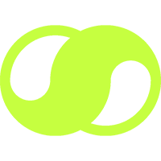

A Multidisciplinary Life Is My Only Goal
By combining my diverse skills in unique ways, I bring multiple digital products to life. My ability to execute ideas across various disciplines enables me to build effective communication with specialized professionals, ensuring seamless collaboration.
More
